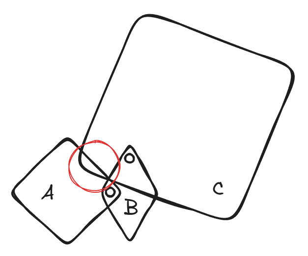

Articulation and Robot Simulation Stability Guide#
Recommended practices for tuning articulation and simulation parameters to achieve stable robot simulations. See Articulations for how to author the articulation, its drives, friction, and armature.
Reduce the Timestep for Complex Systems and Closed Loops#
Complex mechanisms have higher natural frequencies and need smaller timesteps. Closed articulation loops and humanoids often need well above the default 60 Hz (humanoids commonly run at 100 Hz or more).
Try reducing the timestep (raise
physxScene:timeStepsPerSecond) to see if instability resolves.If it does, try reducing the number of TGS/PGS position iterations — stability is often preserved with fewer iterations at a smaller timestep, improving performance.
Mimic Joint Compliance#
Competing hard constraints — contacts, stiff drives, and mimic joints — are hard for the solver, especially in manipulation. Adding compliance to mimic joints (natural frequency + damping ratio) lets them yield just enough to avoid numerical issues. See mimic joints.
Maximum Joint Velocity#
Early RL training produces high joint velocities that cause instability. Clamp
per-axis joint velocity with physxJointAxis:<axis>:maxJointVelocity; a generous
200-300 deg/s for revolute joints often reduces instability.
Maximum Drive Force#
Stiff drives produce large forces, and large forces mean large accelerations and velocities that destabilize systems with other stiff constraints.
Set the drive’s
maxForceto clamp drive force.Avoid clamps that would still produce very large accelerations on the lightest body mass/inertia in the pair.
Use the actuator specification’s maximum output torque/force where available.
For linear DOFs, avoid accelerations orders of magnitude beyond gravity. For angular DOFs, avoid accelerations that reach ~360 deg/s in a single step.
Drive Stability#
Model a PD drive as a spring-damper and tune through natural frequency and damping ratio. For linear drives:
[ naturalFrequency = \sqrt{stiffness / mass} ] [ dampingRatio = damping / (2 \sqrt{stiffness \cdot mass}) ]
For angular drives, substitute inertia for mass. Use the lightest relevant mass/ inertia of the coupled pair (considering the attached subtree).
Avoid timestep x natural-frequency products much greater than 1, especially if the joint participates in a mimic joint or a gripping action.
Reduce the effective timestep by increasing TGS position iterations (or reduce the timestep) — both cost performance.
Damping ratios beyond critical give a steady but sluggish approach.
Acceleration Drives#
If actuator stiffness/damping are unknown, acceleration drives are easier to tune because the engine compensates for joint inertia each step:
[ stiffness = naturalFrequency^2 ] [ damping = 2 \cdot dampingRatio \cdot \sqrt{stiffness} ]
Because contact-coupled mass is not considered in per-step joint inertia, acceleration drives can appear too weak in manipulation.
Joint Position Tracking#
High stiffness for tight target tracking causes large forces and instability. Instead:
Add feed-forward effort (gravity, acceleration, Coriolis compensation) using the read-only inverse-dynamics tensor types (
ARTICULATION_GRAVITY_FORCE,ARTICULATION_MASS_MATRIX,ARTICULATION_CORIOLIS_AND_CENTRIFUGAL_FORCE,ARTICULATION_JACOBIAN) — see Tensor Bindings.Limit the drive force, or rate-limit the drive targets, to avoid large forces from targets far from the current state.
Mass Ratios#
An impulse on a large mass propagated to a small mass produces very large velocities. Avoid large mass/inertia ratios, and verify (for example through OmniPVD) that link masses and inertias are reasonable and nonzero.
Joint Armature#
Armature adds joint-space inertia (and corresponding damping), which improves stability — especially when a link’s own inertia is small relative to competing constraints. How to set it (including modeling a geared actuator’s reflected rotor inertia) is covered in Articulation Joint Friction and Armature.
Articulation Link Self-Collision#
Unintended self-collisions between non-adjacent links cause instability. When
physxArticulation:enabledSelfCollisions is enabled, PhysX always filters
parent/child link collisions, but non-adjacent links can still collide.

Rather than disabling self-collisions globally (usually needed for modeling),
selectively disable collision between the problem links with
UsdPhysicsFilteredPairsAPI (see
pairwise filtering). A
good first diagnostic step is to disable self-collisions to confirm they are the
cause.
Articulation Solver Order#
The solver has a strict constraint ordering. For gripping, resolving dynamic contact toward the end of the solver can help (the solver favors constraints resolved last). Enable it on the scene:
from pxr import Sdf
scene_prim.ApplyAPI("PhysxSceneAPI")
scene_prim.CreateAttribute("physxScene:solveArticulationContactLast", Sdf.ValueTypeNames.Bool).Set(True)
This reorders the solver so max joint velocity is enforced last and dynamic contact is resolved just before static contact — which can reduce persistent contact penetration and strengthen gripping, at a measurable performance cost. Try it before resorting to a much smaller timestep.
For a full worked tuning example, see Joint Parameter Tuning: Robotiq 2F-85.